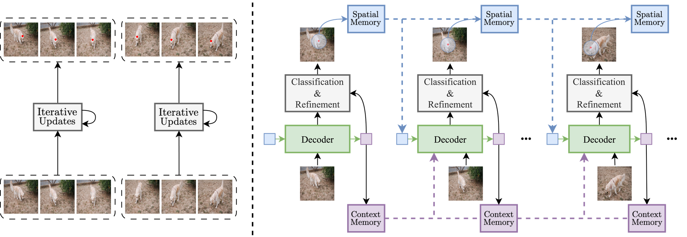
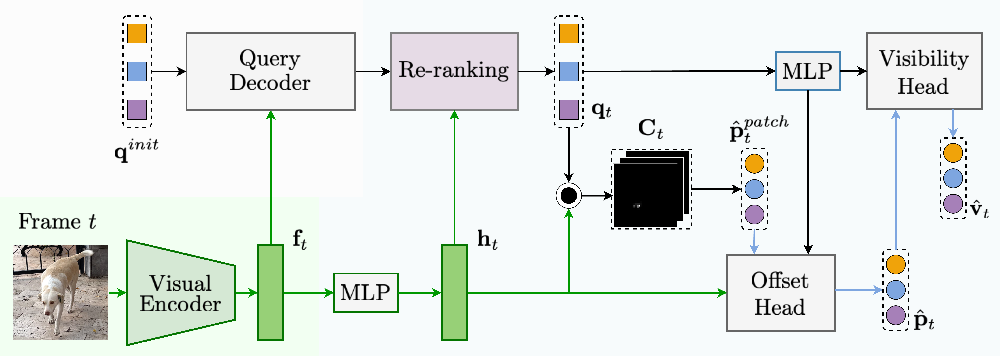
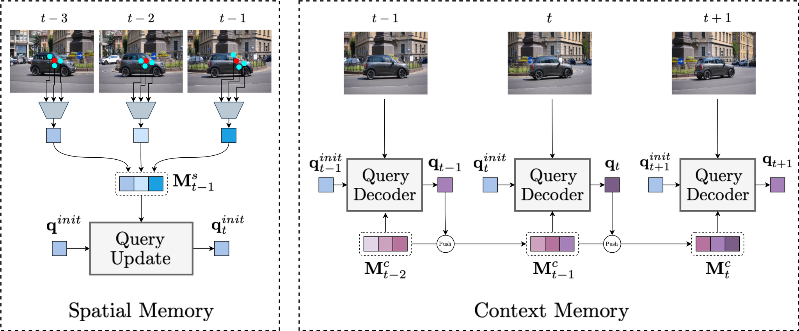
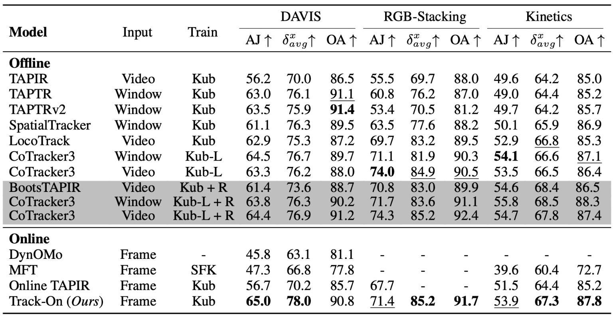
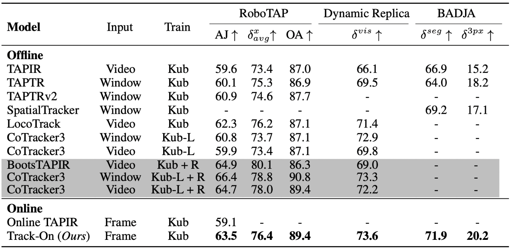
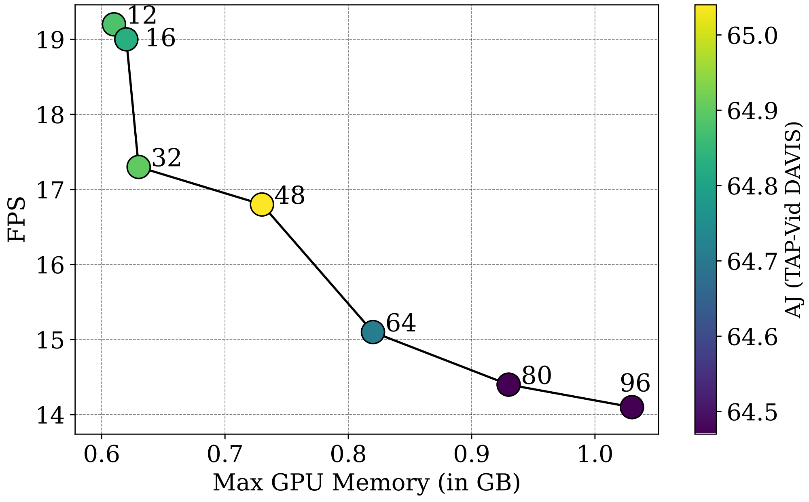

Transformer-based Online Point Tracking with Memory


Abstract
In this paper, we consider the problem of long-term point tracking, which requires consistent identification of points across multiple frames in a video, despite changes in appearance, lighting, perspective, and occlusions. We target online tracking on a frame-by-frame basis, making it suitable for real-world, streaming scenarios. Specifically, we introduce Track-On, a simple transformer-based model designed for online long-term point tracking. Unlike prior methods that depend on full temporal modeling, our model processes video frames causally without access to future frames, leveraging two memory modules, spatial memory and context memory, to capture temporal information and maintain reliable point tracking over long time horizons. At inference time, it employs patch classification and refinement to identify correspondences and track points with high accuracy. Through extensive experiments, we demonstrate that Track-On sets a new state-of-the-art for online models and delivers superior or competitive results compared to offline approaches on seven datasets, including the TAP-Vid benchmark. Our method offers a robust and scalable solution for real-time tracking in diverse applications.
Method Overview

We propose Track-On, a transformer-based model for online long-term point tracking. Our approach processes frames sequentially without future access, leveraging memory modules for robust tracking.
Tracking Pipeline

(i) Visual Encoder: Extracts frame-wise features using a vision transformer backbone.
(ii) Query Decoder: Processes point queries with attention mechanisms to update features dynamically.
(iii) Patch Classification & Refinement: Instead of directly regressing coordinates, the model treats tracking as a classification task by selecting the most likely patch for a given query and refining the estimate with local offsets.
(iv) Visibility Estimation: Determines whether a point remains visible in the frame.
Memory Modules

(i) Spatial Memory: Stores local regions around past predictions to mitigate feature drift.
(ii) Context Memory: Maintains a history of past query embeddings to preserve long-term tracking consistency.
(iii) Memory Update & Retrieval: Updates memory dynamically to refine predictions and track occluded points.
Results
Quantitative Results on TAP-Vid Benchmark

We compare Track-On against existing online and offline point tracking models on the TAP-Vid benchmark, evaluating performance across three datasets:
DAVIS, RGB-Stacking, and Kinetics. Offline models have access to full video sequences or temporal windows, leveraging bidirectional information for improved accuracy, while online models process frames sequentially, making them more suitable for real-time applications.
Our model Track-On establishes a new state-of-the-art among online methods, outperforming Online TAPIR across all datasets. Despite operating in an online setting, Track-On achieves performance comparable to or exceeding several offline approaches.
Results on RoboTAP, Dynamic Replica, and BADJA

We further evaluate Track-On on RoboTAP, Dynamic Replica, and BADJA, which test long-term tracking in real-world robotic and 3D motion scenarios.
Track-On not only outperforms Online TAPIR across all datasets but also surpasses several offline models, demonstrating strong temporal consistency and robustness to occlusions.
Efficiency

The table above presents results across different memory sizes, demonstrating Track-On's flexibility in adapting to various computational constraints.
Track-On is designed for efficiency, enabling real-time frame-by-frame tracking with minimal computational overhead. Unlike offline methods that require full video access and heavy temporal processing, our approach operates sequentially, significantly reducing memory and compute requirements.
Our model runs at over 15 FPS while using less than 1 GB of GPU memory, making it highly efficient for real-time applications and consumer-grade hardware.
Paper
Track-On: Transformer-based Online Point Tracking with Memory
Gorkay Aydemir, Xiongyi Cai, Weidi Xie and Fatma Guney
ICLR 2025
@InProceedings{Aydemir2025ICLR,
author = {Aydemir, G\"orkay and Cai, Xiongyi and Xie, Weidi and G\"uney, Fatma},
title = {{Track-On}: Transformer-based Online Point Tracking with Memory},
booktitle = {The Thirteenth International Conference on Learning Representations},
year = {2025}}